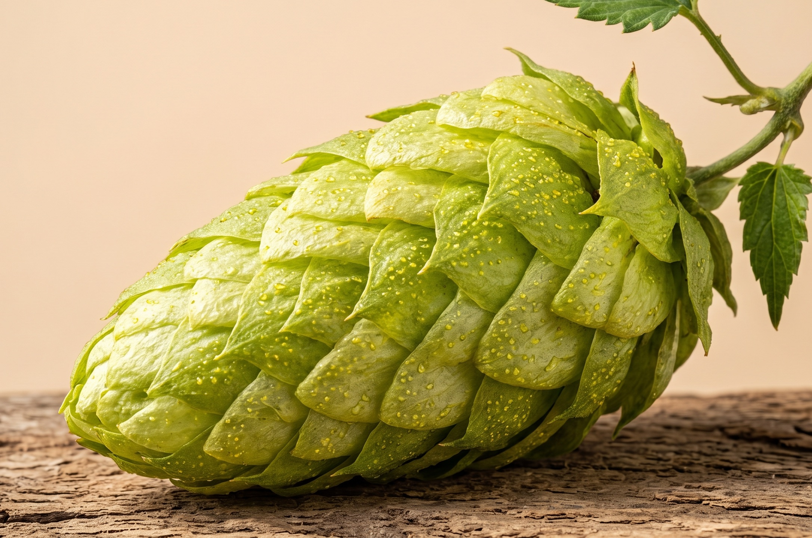

Valley Cascade
Sold OutAlpha7.3
Beta8.8
$421 kg pellets
AromaCitrus (grapefruit) and floral
UseDual-purpose — mostly aroma, some bittering
Available asWet hop, pellet, or whole leaf
Brewing tips
- Why choose it — Bring grapefruit and floral character to pale ales, IPAs, or a bright, hop-forward blonde ale.
- How to use it — Add in the last 5–15 minutes of the boil for flavour, or in the whirlpool for more aroma. Dry hop to bring the citrus and floral notes forward.
- Try it with — Pair with Centennial for a classic citrus-and-pine profile, or let Cascade lead a single-hop pale ale.